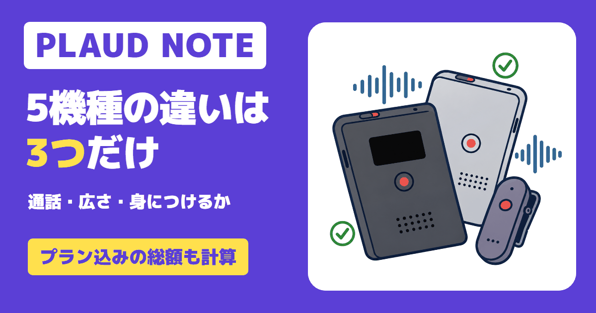

コラム ／ 業務ツール
本記事にはアフィリエイト広告(A8.net)を利用したリンクが含まれます。リンク経由でお申し込みがあった場合、運営者(SET UP)が報酬を受け取ることがあります。紹介するサービスの選定と評価は、運営者の基準で行っています。
PLAUD NOTEの機種比較。Note Pro・Note・NotePinの違いと、録音量で決まる1年目の総額

PLAUDのAIボイスレコーダーは、いま公式ストアで5機種が販売されています。機種の違いは「通話を録るか」「広い部屋で録るか」「身につけるか」でほぼ決まり、1年目の総額は、機種よりも文字起こしのプランで大きく変わります。公式サイトの仕様と料金をもとに整理しました。
PLAUDの機種は、見た目が似ていても、収音できる距離、通話の録音、画面の有無などが違います。一方で、文字起こしのプランはどの機種でも共通です。本体の価格差は最大3,300円ですが、プランの料金は年16,800円〜40,000円の幅があるため、総額は機種よりも「月にどれくらい録音するか」で決まります。
この記事は、PLAUDの公式サイト(公式ストア・サポートページ)で2026年11月20日に確認した仕様と料金をもとにしています。使ってみた感想ではなく、公式に公開されている情報の整理です。価格は税込で、セール価格ではなく、公式ストアに表示されている通常価格で計算しています。仕様や価格は変わることがあるため、購入前に公式ストアで確認してください。
結論:通話を録るならカード型、身につけるならピン型
- 電話の商談や通話も録りたいなら、カード型(Note Pro、Note Pro Flow Edition、Note)から選びます。ピン型の NotePin・NotePin S は通話の録音に対応していません。
- 会議室が広い、参加者が多いなら、収音範囲が最大5mの Note Pro(30,800円)。少人数の会議や1対1の面談が中心なら、最大3mの Note(27,500円)でも範囲に入ります。
- iPhoneで、録音をすぐスマホに送りたいなら、録音ごとに自動で転送する Note Pro Flow Edition(29,700円)も候補です。本体の保存容量は512MBで、自動転送は現時点でiPhoneのみの対応です。
- 対面の会話が中心で、身につけて録りたいなら、ピン型の NotePin S(28,600円)か NotePin(27,500円)。ボタンで操作したい、付属品が多いほうがよいなら NotePin S です。
どの機種にも、毎月300分の文字起こしができる無料の Starter プランが付きます。月300分を超えるなら有料プランを足して考えます(1年目の総額)。
PLAUDの機種と価格を、公式ストアで確認
どの機種にも、月300分の文字起こし(Starterプラン)が付きます。価格とプランは変わることがあるため、購入前に公式ストアで確認してください。
PLAUD NOTEPLAUDの機種は5種類
公式ストアで販売されている機種は、カード型が3つ、ピン型が2つです。
| 機種 | 形 | 価格(税込) | 公式の説明(要旨) |
|---|---|---|---|
| Note Pro | カード型・画面付き | 30,800円 | 広い空間で録音したい、チームやプロユーザー向け |
| Note Pro Flow Edition | カード型・画面付き | 29,700円 | Note Pro と共通の仕様で、本体の保存容量が512MB(一時保存用) |
| Note | カード型 | 27,500円 | 通話も対面の会議も多い人向け |
| NotePin S | ピン型(身につける) | 28,600円 | 物理ボタンでハイライト記録ができ、装着用の付属品が4種類 |
| NotePin | ピン型(身につける) | 27,500円 | ハンズフリーで対面の会話を録音したい人向け。最も軽い |
このほかに、イヤホン型の新しい機種「Plaud One」(44,000円)が、公式ストアでウェイトリスト(予約登録)を受け付けています。会話をもとにAIがタスクを実行する、ほかの5機種とは性格の違う製品なので、この記事の比較には入れていません。
機種の違いを比べる
公式の比較ページと製品ページの仕様を、1つの表にまとめました。
| Note Pro | Note Pro Flow Edition | Note | NotePin S | NotePin | |
|---|---|---|---|---|---|
| 価格 | 30,800円 | 29,700円 | 27,500円 | 28,600円 | 27,500円 |
| 収音範囲 | 最大5m | 最大5m | 最大3m | 最大3m | 最大3m |
| マイク | MEMS×4 | MEMS×4 | MEMS×2 | MEMS×2 | MEMS×2 |
| 通話の録音 | 対応(自動で切替) | 対応(自動で切替) | 対応(手動で切替) | 非対応 | 非対応 |
| 画面 | あり | あり | なし | なし | なし |
| ボタン | 物理ボタン | 物理ボタン | 物理ボタン | 物理ボタン | 感圧ボタン |
| 短押しでハイライト | ○ | ○ | ○ | ○ | - |
| 連続録音 | 最大30時間 (長時間モード50時間) | 最大50時間 | 最大30時間 | 最大20時間 | 最大20時間 |
| 保存容量 | 64GB | 512MB | 64GB | 64GB | 64GB |
| Apple「探す」 | ○ | ○ | - | ○ | ○ |
| 重さ | 30g | 30g | 30g | 17.4g | 16.6g |
| サイズ | 85.6×54.1×2.99mm(3機種共通) | 51×21×11mm(2機種共通) | |||
収音範囲とマイク:5mか、3mか
Note Pro と Flow Edition はマイクが4基で、収音範囲は最大5mです。Note と NotePin・NotePin S はマイクが2基で、最大3mです。公式サイトでは、Note Pro を「広い空間でクリアな音声で録音したい、チームやプロユーザー」向けと案内しています。机を囲む少人数の会議なら3mの範囲に入りますが、長い会議机の端から端まで録りたい場合や、参加者が多い場合は、5mの機種が向いています。
通話の録音:ピン型は対応していない
カード型の3機種は、スマホの背面に付けて、通話の音声を録音できます(本体の振動センサーで通話を拾う仕組みです)。Note Pro と Flow Edition は通話と対面の録音モードを自動で切り替え、Note は手動で切り替えます。NotePin と NotePin S は、公式FAQで「通話録音に対応していません」と案内されており、対面の録音専用です。
画面・ボタン・ハイライト
画面があるのは Note Pro と Flow Edition だけです。録音中かどうかを本体で確かめられます。録音中にボタンを短く押すと、その瞬間を「ハイライト」として記録でき、要約に反映されます。NotePin だけは感圧式のボタンで、ハイライト記録の機能がありません。
バッテリーと保存容量
カード型は連続録音が最大30時間(Note Pro の長時間駆動モードは最大50時間)、ピン型は最大20時間です。保存容量は、Flow Edition だけが512MBで、ほかは64GBです。Flow Edition の違いは、次の章で説明します。
Note Pro と Note Pro Flow Edition の違い
Flow Edition は、Note Pro より1,100円安い、Note Pro の別バージョンです。公式の製品ページでは、主な違いとして次の2点が挙げられ、「その他の機能・仕様は、Plaud Note Proと共通」とされています。
- 本体の保存容量が512MB:データをスマホに送るまでの一時保存用で、標準の録音品質で約30時間分。録音が終わるごとに自動で転送され、空き容量が確保されます。
- 収音性能:AI指向性収音技術を搭載した、S/N比68dBのマイクを4基搭載。
注意したいのは、自動転送はアプリの設定で有効にする必要があり、現時点ではiPhoneのみの対応(Androidは今後対応予定)と書かれている点です。Androidを使う人や、本体に録音をためておき、あとでまとめて転送したい人は、保存容量が64GBの Note Pro のほうが扱いやすいと考えられます。iPhoneで、録音のたびにすぐスマホへ送る使い方なら、Flow Edition でも足ります。
NotePin と NotePin S の違い
どちらも、服や手首に付けて使うピン型です。公式FAQでは、違いは「録音・ハイライト記録の操作、付属アクセサリー、重量」とされています。
| NotePin S | NotePin | |
|---|---|---|
| 価格 | 28,600円 | 27,500円 |
| ボタン | 物理ボタン(長押しで録音、短押しでハイライト) | 感圧式(ボタンのない形) |
| 付属の装着品 | マグネットピン、クリップ、ネックストラップ、リストバンド | マグネットピン、クリップ |
| 重さ(ピンなし) | 17.4g | 16.6g |
公式FAQは、操作のしやすさ、ボタンでのハイライト記録、装着方法の多さを重視するなら NotePin S、ボタンのない形と軽さを重視するなら NotePin、と案内しています。差額は1,100円です。
料金プラン:無料のStarterと有料プラン
文字起こしと要約は、本体ではなくPLAUDのアプリとクラウドで行われます。プランはどの機種でも共通で、本体を買うと無料の Starter プランが使えます。
| プラン | 文字起こし | 年払い | 月払い |
|---|---|---|---|
| Starter | 月300分 | 0円(本体の購入特典) | |
| Pro | 月1,200分 | 年16,800円(月1,400円相当) | 月3,000円 |
| Unlimited | 無制限(1日最大24時間) | 年40,000円(月3,333円相当) | 月5,000円 |
公式FAQによると、次のような決まりがあります。
- 使わなかった分は翌月に繰り越せない:文字起こしの時間は請求サイクルの更新日にリセットされます。
- 上限を使い切っても、録音はできる:録音・再生・ファイル管理はそのまま使え、文字起こしだけが次のサイクルまで止まります。
- 足りない月は、追加のパッケージを買える:600分 2,000円、3,000分 10,000円、6,000分 15,000円。
月払いは、1年続けると年払いより Pro で19,200円(月3,000円×12ヶ月=36,000円)、Unlimited で20,000円(月5,000円×12ヶ月=60,000円)高くなります。録音量が読めないうちは、Starter のまま様子を見て、毎月足りなくなるようなら年払いに切り替える、という順番が無駄が少なくなります。
機種×プランの「1年目の総額」
本体の価格に、プランの年払いの料金を足しました。
| 月の録音量 | Note Pro | Flow Edition | Note | NotePin S | NotePin |
|---|---|---|---|---|---|
| 300分まで(Starter) | 30,800円 | 29,700円 | 27,500円 | 28,600円 | 27,500円 |
| 1,200分まで(Pro) | 47,600円 | 46,500円 | 44,300円 | 45,400円 | 44,300円 |
| 1,200分超(Unlimited) | 70,800円 | 69,700円 | 67,500円 | 68,600円 | 67,500円 |
表を横に見ると、機種による差は最大3,300円です。縦に見ると、プランによる差は16,800円〜40,000円あります。機種は「どこで、何を録るか」で選び、予算は「月に何分録るか」で見積もるのが、この表から言えることです。
月の録音量の目安
- 週1回・1時間の定例会議だけ:月240分ほど → Starter(月300分)の範囲
- 平日に毎日1時間の会議や商談:月1,200分ほど(20日×60分) → Pro の上限に近い
- 平日に毎日2時間以上:月2,400分以上 → Unlimited
公式FAQでも「毎月の録音時間が20時間を超える場合は、Unlimitedプラン」が費用対効果が高いと案内されています。また、毎月少しだけ上限を超える場合に、パッケージで補うと割高になることがあります。たとえば月600分を、Starter と毎月の600分パッケージ(2,000円)でまかなうと年24,000円になり、Pro の年払い(16,800円)より高くなります。超えるのが年に数回ならパッケージ、毎月超えるなら上のプラン、と考えるとわかりやすくなります。
選ぶときに確認したい3つのこと
1. 電話の打ち合わせがあるか
機種選びで最初に分かれるのは、通話を録るかどうかです。広告運用の仕事では、クライアントとの定例はオンライン会議でも、細かい確認や急ぎの相談は電話で済ませることがよくあります。電話の内容も議事録に残したいなら、カード型(Note Pro、Flow Edition、Note)を選びます。対面と移動中の会話が中心なら、ピン型も候補に入ります。
2. オンライン会議は、本体なしでも録れる
PLAUDの機種を持っている人は、パソコン用の「Plaud Desktop」を無料で使えます。公式サイトでは、ボットを会議に参加させずに、オンライン会議を録音できると案内されています。Zoom や Google Meet の会議が中心なら、本体は対面や通話の場面だけを考えて選べばよく、上位の機種を選ぶ理由にはなりません。
3. 録音することを、相手に伝える
公式FAQでは、録音の前に参加者へ一言伝えるのがマナーとし、「会話内容を漏れなく記録したりフォローアップしたりするために、AIボイスレコーダーを使ってもいいですか?後で議事録を共有します。」という伝え方の例を載せています。クライアントの売上や広告費などの数字を扱う会議では、録音の可否と、録音データを外部のサービスに保存してよいかを、先に確認しておくと行き違いが起きにくくなります。定例で何の数字を確認するかは、「広告のレポートで、最初に見るべき3つの数字」で整理しています。
PLAUD以外の機種と比べたい場合
この記事は、PLAUDを買うと決めた人向けの機種選びです。Notta Memo や Comu など、ほかのメーカーのAIボイスレコーダーや、専用機を買わずにアプリだけで使う場合と比べたいときは、「AIボイスレコーダーの比較。本体代と文字起こし料金の「1年目の総額」で選ぶ」で、無料の文字起こし枠と1年目の総額を比べています。
よくある質問
- Q. 無料プランだけで使えますか?
- 使えます。公式FAQでは、本体を購入すると特典として毎月300分の文字起こしが無料で使えるため、月額料金を支払う必要はない、と案内されています。使わなかった分は翌月に繰り越せないので、月300分に収まるかで判断します。
- Q. 有料プランの月額料金はいくらですか?
- Pro(月1,200分)は月払いで月3,000円、年払いで年16,800円です。Unlimited(無制限)は月払いで月5,000円、年払いで年40,000円です(2026年11月20日確認)。
- Q. 文字起こしの時間を使い切ったら、どうなりますか?
- 録音や再生はそのまま使え、文字起こしだけが次の更新日まで止まります。待てない場合は、600分(2,000円)などの追加パッケージを買うか、上のプランに切り替えます。
- Q. 通話を録音できるのはどの機種ですか?
- カード型の Note Pro、Note Pro Flow Edition、Note です。ピン型の NotePin と NotePin S は、通話の録音に対応していません。
- Q. Note Pro と Note は、プランや文字起こしのAIが違いますか?
- プランはどの機種でも共通です。機種の違いは、収音範囲、マイクの数、画面、録音モードの切り替え、バッテリーなど本体の部分です。
まとめ
- PLAUDの機種は、カード型3つ(Note Pro、Note Pro Flow Edition、Note)とピン型2つ(NotePin S、NotePin)
- 通話を録るならカード型。広い会議室なら収音範囲5mの Note Pro、少人数なら Note
- Flow Edition は保存容量512MBで、録音の自動転送は現時点でiPhoneのみ
- プランは全機種共通。本体の差は最大3,300円、プランの差は年16,800円〜40,000円
- 録音量が読めないうちは Starter(月300分)で始め、毎月足りなくなったら年払いのプランを検討する
PLAUDの機種と価格を、公式ストアで確認
どの機種にも、月300分の文字起こし(Starterプラン)が付きます。価格とプランは変わることがあるため、購入前に公式ストアで確認してください。
PLAUD NOTE